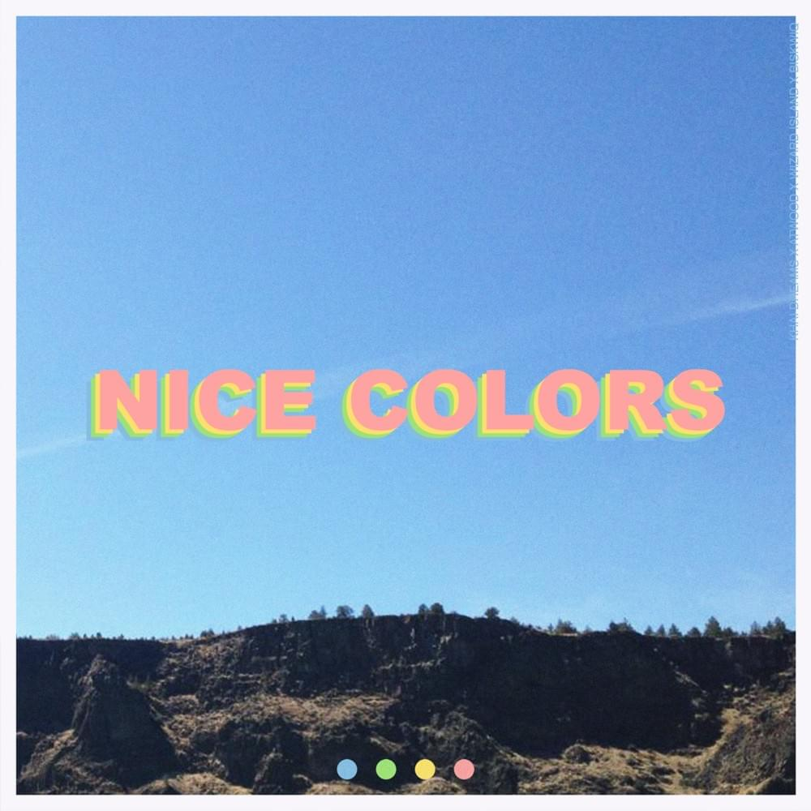

Source
|
The Click is the second studio album by pop band AJR. It was released on June 9, 2017, by the band's label AJR Productions. The album was preceded by the five-track extended play What Everyone's Thinking in September 2016, which was composed of songs that all appear on The Click. Source |
|---|
|  | Nice Colors, a collaborative EP from Khai Dreams and Atwood, is a voyage into the sounds of summer. Warm, catchy vocals and punchy, sparkling production fill the project with positive emotion. Perfect for relaxing in the sun, taking a bike ride, or swimming by the ocean, this tape complements the feelings of summer. Furthermore, Nice Colors marks a milestone in these artists' careers; it will likely be remembered for years to come. Source |
|---|